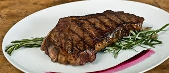
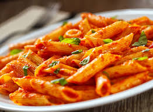

A steak is a meat generally sliced
across
the muscle fibers, potentially
including a bone. It is normally grilled,
though can also be pan-fried.

Pasta is a type of food typically
made from an unleavened
dough of
wheat flour mixed with water or eggs,
& formed into shapes & cooked by boiling.

Pizzais a savory dish of Italian origin
consisting of usually a
base of leavened
wheat-based dough topped with various
ingredients
& then baked at a high temperature.